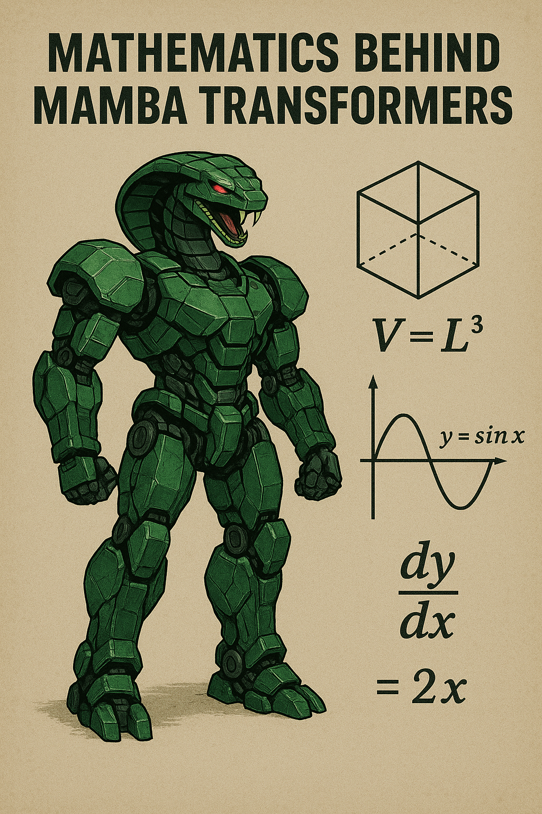

# Pseudocode for Mamba block processing
def mamba_block(x):
# 1. Input Projections
x_prime = Linear_in(x) # ∈ R^(B×L×2E)
x1, x2 = split(x_prime) # each ∈ R^(B×L×E)
# 2. Selection Parameters
B = s_B(x1) # ∈ R^(B×L×N)
C = s_C(x1) # ∈ R^(B×L×N)
Delta = softplus(s_Delta(x1)) # ∈ R^(B×L×N)
# 3. Discretization
A_bar = exp(Delta * A) # ∈ R^(B×L×N×N)
B_bar = Delta * B # ∈ R^(B×L×N)
# 4. SSM Computation
y1 = SSM(A_bar, B_bar, C)(x1) # ∈ R^(B×L×E)
# 5. Gating and Output
y = y1 * SiLU(x2)
output = Linear_out(y)
return outputMathematics Behind Mamba Transformers: A Complete Guide

Introduction
Mamba represents a breakthrough in sequence modeling that addresses the quadratic complexity limitation of traditional transformers. Built on State Space Models (SSMs), Mamba introduces a selective mechanism that allows the model to dynamically focus on relevant information while maintaining linear computational complexity with respect to sequence length.
Important
The key innovation lies in making the SSM parameters input-dependent, creating a selective state space that can efficiently process long sequences while maintaining the modeling capabilities that made transformers successful.
Foundation: State Space Models
Continuous State Space Models
State Space Models originate from control theory and signal processing. In continuous time, they are defined by:
\[ \begin{align} h'(t) &= Ah(t) + Bx(t) \quad \text{(state equation)} \\ y(t) &= Ch(t) + Dx(t) \quad \text{(output equation)} \end{align} \tag{1}\]
Where:
- \(h(t) \in \mathbb{R}^N\) is the state vector at time t
- \(x(t) \in \mathbb{R}\) is the input signal
- \(y(t) \in \mathbb{R}\) is the output signal
- \(A \in \mathbb{R}^{N \times N}\) is the state transition matrix
- \(B \in \mathbb{R}^N\) is the input matrix
- \(C \in \mathbb{R}^{1 \times N}\) is the output matrix
- \(D \in \mathbb{R}\) is the feedthrough term (often set to 0)
The HiPPO Framework
NoteHiPPO Framework
The HiPPO (High-order Polynomial Projection Operators) framework provides a principled way to initialize the A matrix. The key insight is to maintain a polynomial approximation of the input history.
For the Legendre polynomials case (LegS):
- The A matrix has entries: \(A_{nk} = (2n+1)^{1/2}(2k+1)^{1/2}\) if \(n > k\), and \(A_{nk} = n+1\) if \(n = k\)
- This choice ensures that the state vector maintains an optimal polynomial approximation of the input history
From Continuous to Discrete
Discretization Process
To apply SSMs to discrete sequences, we discretize using a step size \(\Delta\):
The Zero-Order Hold (ZOH) discretization gives us:
\[ \begin{align} h_k &= \bar{A}h_{k-1} + \bar{B}x_k \\ y_k &= Ch_k \end{align} \tag{2}\]
Where:
\[ \begin{align} \bar{A} &= \exp(\Delta A) \\ \bar{B} &= (\Delta A)^{-1}(\exp(\Delta A) - I)\Delta B \end{align} \tag{3}\]
Computational Forms
For generation: \[ \begin{align} h_k &= \bar{A}h_{k-1} + \bar{B}x_k \\ y_k &= Ch_k \end{align} \]
For training: The SSM can be viewed as a convolution with kernel \(K\): \[ K = (C\bar{B}, C\bar{A}\bar{B}, C\bar{A}^2\bar{B}, \ldots, C\bar{A}^{L-1}\bar{B}) \] \[ y = K * x \] Where \(*\) denotes convolution and \(L\) is the sequence length.
The Selection Mechanism
The Core Innovation
TipKey Innovation
Traditional SSMs use fixed parameters \(A\), \(B\), \(C\), and \(\Delta\). Mamba’s key innovation is making these parameters functions of the input.
\[ \begin{align} B &= s_B(x) \\ C &= s_C(x) \\ \Delta &= \tau(s_\Delta(x)) \end{align} \tag{4}\]
Where:
- \(s_B\), \(s_C\), \(s_\Delta\) are learnable projection functions
- \(\tau\) is typically the softplus function: \(\tau(x) = \log(1 + \exp(x))\)
Selection Functions
The selection functions are implemented as linear projections:
\[ \begin{align} s_B(x) &= \text{Linear}_B(x) \quad \in \mathbb{R}^{B \times N} \\ s_C(x) &= \text{Linear}_C(x) \quad \in \mathbb{R}^{B \times N} \\ s_\Delta(x) &= \text{Broadcast}(\text{Linear}_\Delta(x)) \quad \in \mathbb{R}^{B \times N} \end{align} \tag{5}\]
Where \(B\) is the batch size and \(N\) is the state dimension.
Mathematical Justification
The selection mechanism allows the model to:
- Filter irrelevant information: By modulating \(B\), the model controls what information enters the state
- Focus on specific aspects: By modulating \(C\), the model controls what information is output
- Control information flow: By modulating \(\Delta\), the model controls the rate of state updates
Mamba Block Architecture
Complete Block Definition
A Mamba block processes input \(x \in \mathbb{R}^{B \times L \times D}\) as follows:
Mathematical Formulations
Selective Scan Algorithm
The core SSM computation for a sequence of length \(L\):
\[ \begin{align} h_0 &= 0 \\ \text{for } k &= 1 \text{ to } L: \\ h_k &= \bar{A}_k \odot h_{k-1} + \bar{B}_k \odot x_k \\ y_k &= C_k \odot h_k \end{align} \tag{6}\]
Where \(\odot\) denotes element-wise multiplication.
Parallel Scan Formulation
For parallel computation, we can express the recurrence as:
\[ h_k = \left(\prod_{i=1}^k \bar{A}_i\right) \odot h_0 + \sum_{j=1}^k \left(\prod_{i=j+1}^k \bar{A}_i\right) \odot (\bar{B}_j \odot x_j) \tag{7}\]
This can be computed efficiently using parallel prefix sum algorithms.
Matrix Form
The complete transformation can be written as:
\[ Y = \text{SSM}(X; A, B, C, \Delta) \tag{8}\]
Where each element is:
\[ Y[b,l,d] = \sum_{k=1}^l \sum_{n=1}^N C[b,l,n] \cdot \left(\prod_{j=k+1}^l \bar{A}[b,j,n]\right) \cdot \bar{B}[b,k,n] \cdot X[b,k,d] \tag{9}\]
Computational Efficiency
Complexity Analysis
The linear scaling enables processing of very long sequences that would be prohibitive for standard transformers.
| Model | Time Complexity | Memory Complexity |
|---|---|---|
| Transformer Attention | \(O(L^2D)\) | \(O(L^2)\) |
| Mamba | \(O(LD)\) | \(O(LD)\) |
Hardware-Aware Implementation
The selective scan can be implemented efficiently using:
- Parallel Scan: Using associative operations for parallel computation
- Kernel Fusion: Combining discretization and scan operations
- Memory Optimization: Avoiding materialization of large intermediate tensors
Scan Operation Optimization
The parallel scan computes:
\[ (h_1, h_2, \ldots, h_L) = \text{parallel\_scan}(\odot, (\bar{A}_1\bar{B}_1x_1, \bar{A}_2\bar{B}_2x_2, \ldots, \bar{A}_L\bar{B}_Lx_L)) \tag{10}\]
Where the binary operator is:
\[ (\bar{A}^i, b^i) \odot (\bar{A}^j, b^j) = (\bar{A}^j \odot \bar{A}^i, \bar{A}^j \odot b^i + b^j) \tag{11}\]
Comparison with Transformers
Attention vs Selection
\[ \text{Attention}(Q,K,V) = \text{softmax}\left(\frac{QK^T}{\sqrt{d}}\right)V \]
- Computes all pairwise interactions: \(O(L^2)\)
- Global receptive field
- Content-based selection
\[ \text{Selection via } B(x), C(x), \Delta(x) \]
- Input-dependent parameters: \(O(L)\)
- Infinite (theoretically) receptive field through state
- Context-based filtering
Information Flow
Transformers
- Information flows through attention weights
- Each token can attend to all previous tokens
- Requires causal masking for autoregressive generation
Mamba
- Information flows through the state vector
- State acts as a compressed representation of history
- Naturally causal due to recurrent structure
Implementation Details
Initialization Strategies
- A Matrix: Initialize using HiPPO-LegS or similar structured initialization
- B, C Projections: Standard Gaussian initialization scaled by dimension
- \(\Delta\) Projection: Initialize to encourage slow dynamics initially
Numerical Stability
Several techniques ensure stable computation:
WarningStability Considerations
- Clipping: Clip \(\Delta\) values to prevent overflow in exponential
- Recomputation: Use selective recomputation during backward pass
- Mixed Precision: Use appropriate precision for different operations
Training Considerations
- Gradient Flow: The recurrent nature requires careful handling of gradients
- Truncated BPTT: May use truncated backpropagation for very long sequences
- Regularization: Apply dropout to projections rather than the state itself
Advanced Topics
Multi-Head Mamba
Similar to multi-head attention, Mamba can use multiple independent SSM heads:
\[ \text{MultiHead\_Mamba}(x) = \text{Concat}(\text{head}_1, \ldots, \text{head}_h)W^O \]
where \(\text{head}_i = \text{Mamba}_i(x)\)
Bidirectional Processing
For non-causal applications, bidirectional Mamba processes sequences in both directions:
\[ y = \text{Mamba}_{\text{forward}}(x) + \text{Mamba}_{\text{backward}}(\text{reverse}(x)) \tag{12}\]
Integration with Other Mechanisms
Mamba blocks can be combined with:
- MLP blocks: Following similar patterns to transformer architectures
- Convolution: For local pattern recognition
- Attention: For hybrid architectures
Conclusion
ImportantKey Contributions
Mamba transformers represent a significant advance in sequence modeling by:
- Achieving Linear Complexity: \(O(L)\) instead of \(O(L^2)\) for sequence length \(L\)
- Maintaining Expressiveness: Through the selective mechanism
- Enabling Long Sequences: Practical processing of sequences with 100K+ tokens
- Preserving Parallelism: Training remains efficient through parallel scan
The mathematical foundation built on selective state space models provides both theoretical rigor and practical efficiency, making Mamba a compelling alternative to traditional transformer architectures for many sequence modeling tasks.
NoteKey Insight
The key insight is that by making SSM parameters input-dependent, we can maintain the benefits of both recurrent models (linear complexity, infinite receptive field) and transformers (parallelizable training, strong performance), opening new possibilities for efficient sequence modeling at scale.
Appendix
Mathematical Notation Summary
| Symbol | Description |
|---|---|
| \(h(t), h_k\) | State vector (continuous/discrete) |
| \(x(t), x_k\) | Input signal/sequence |
| \(y(t), y_k\) | Output signal/sequence |
| \(A, \bar{A}\) | State transition matrix |
| \(B, \bar{B}\) | Input matrix |
| \(C\) | Output matrix |
| \(\Delta\) | Discretization step size |
| \(L\) | Sequence length |
| \(N\) | State dimension |
| \(D\) | Model dimension |